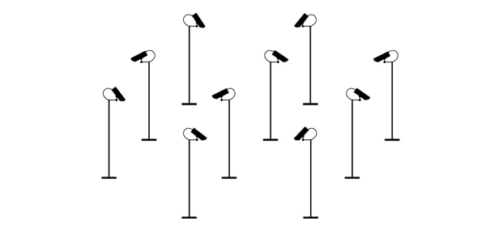

Rozdział 3. Skutki uboczne

W poprzednim rozdziale zastanawialiśmy się nad tym, czy nasza bohaterka
– kamera monitoringu – może być skutecznym lekarstwem na różne społeczne
choroby. W tej części omówimy równie ważny, choć często lekceważony, problem:
skutki uboczne monitoringowej terapii.
Na pytanie, czym płacimy za życie w otoczeniu nadzorowanym przez kamery,
część osób odpowie bez wahania: swoją prywatnością. To jednak nie jedyne wyzwanie
związane ze stosowaniem monitoringu na masową skalę. Przyjrzyjmy się kilku
kluczowym problemom.
Ograniczenia prywatności
Ingerencją w prywatność może być już sama obserwacja naszego zachowania. Jednak z najbardziej dokuczliwymi naruszeniami mamy do czynienia wówczas,
gdy kamera wkracza w przestrzeń domową, w sferę naszej intymności lub umożliwia
zdobycie informacji, które chcemy zachować dla siebie. W jakich sytuacjach
do tego dochodzi?
Zdarza się, że monitoring jest instalowany w toaletach. Dotyczy to na przykład
zakładów pracy, gdzie pracownicy mogą w ogóle nie wiedzieć o zamontowanych
kamerach albo nie wyrażać sprzeciwu ze względu na obawę utraty
pracy. Kamery są instalowane również w szkolnych ubikacjach. W Polsce nie
jest to powszechna praktyka, jednak rządowy program dofinansowania monitoringu
w szkołach przewidywał instalowanie kamer właśnie w toaletach.
Kamery bywają montowane w sklepowych przymierzalniach. Coraz powszechniejszą
praktyką jest umieszczanie monitoringu w przebieralniach
w ośrodkach sportowych, np. na basenach.
Zdarzają się przypadki instalowania kamer w salach szpitalnych i karetkach.
Kamery osiedlowego monitoringu bywają montowane niedaleko drzwi
wejściowych do mieszkań bądź nad skrzynkami pocztowymi. Dzięki temu
można śledzić, kto odwiedza mieszkańców i kto z nimi koresponduje.
Zdarza się nawet, że obraz z kamer obejmuje wnętrza mieszkań.
W niektórych sklepach kamery są skierowane na terminale do płacenia
kartą w taki sposób, że obsługa jest w stanie odczytywać numery PIN
wprowadzane przez klientów.
Monitoring wyposażony w funkcję rejestracji dźwięku daje możliwość zbierania
informacji, które wielu z nas chciałoby zachować dla siebie. Dlatego wiąże się z głębszą
ingerencją w prywatność i wywołuje szczególne kontrowersje.
Przyjęty w 2007 roku program dofinansowania monitoringu w szkołach przewidywał
zakup kamer rejestrujących nie tylko obraz, ale również dźwięk. Ten element programu
wzbudził największy opór. Zaprotestowali między innymi Rzecznik Praw
Obywatelskich i Generalny Inspektor Ochrony Danych Osobowych. W swoich wystąpieniach
do Ministra Edukacji Narodowej podkreślali, że to zbyt głęboka ingerencja
w prywatność uczniów i nauczycieli. Pod naciskiem krytycznych głosów zdecydowano
się na zmianę programu. Oczywiście nie oznacza to, że w praktyce monitoring
wyposażony w mikrofony nie jest w szkołach wykorzystywany.
Ze szczególną ingerencją w autonomię jednostki wiąże się korzystanie z monitoringu ukrytego przed obserwowanymi osobami. Dzięki rozwojowi maleńkich i łatwiejszych do zamaskowania kamer staje się to coraz prostsze.
Nie trzeba jednak kamer specjalnie ukrywać, by nagrać osoby, które zupełnie nie zdają sobie sprawy z tego, że są obserwowane. Wiąże się to między innymi z brakiem odpowiedniej informacji. Władze aż 42% przebadanych przez Fundację Panoptykon miast przyznały, że w ogóle nie informują swoich mieszkańców o tym, że dana przestrzeń jest objęta monitoringiem.
Tymczasem w wielu krajach możemy spotkać tablice szczegółowo informujące o kamerach zainstalowanych na danym obszarze. Zazwyczaj wynika to z wymogów prawnych. W Polsce podmioty korzystające z monitoringu takiego obowiązku nie mają. Dlatego tablice pojawiają się rzadko, a jeśli już, to służą raczej promocji bądź odstraszaniu niż rzetelnej informacji. Nie dowiemy się z nich, do kogo należy kamera ani z kim i w jaki sposób możemy skontaktować się w razie pytań bądź problemów.
Obecnie kamery wykorzystywane są w sposób zupełnie dowolny. Ma to związek
z brakiem odpowiednich regulacji prawnych. Nawet miejskie systemy monitoringu
w każdej miejscowości działają inaczej. Różnice dotyczą na przykład długości przechowywania nagrań: w niektórych miastach są one kasowane po trzech dniach,
w innych – leżakują przez trzy miesiące. Trudno takie różnice racjonalnie uzasadnić.
BRAK ZASAD
Skoro kamery monitoringu możemy spotkać na każdym rogu, mogłoby się wydawać, że ich działanie musi być uregulowane przez prawo. Niestety nic bardziej mylnego. Polskie prawo nie określa zasad, na jakich powinien działać monitoring. Obowiązujące przepisy odnoszą się tylko do niektórych przypadków korzystania z kamer, np. w zakładach karnych albo w trakcie imprez masowych. To jednak wyjątki.
Ma to daleko idące konsekwencje. Właściwie nie wiadomo, co jest dozwolone, a co zakazane. Prawo nie
określa, gdzie można instalować kamery, kto może to robić i w jakim celu. Nie wiadomo, jak długo powinny być przechowywane nagrania, w jaki sposób należy je zabezpieczać, komu można udostępniać. Nie ma nawet obowiązku informowania, gdzie zainstalowane są kamery. Brakuje również instytucji, która kontrolowałaby, w jaki sposób monitoring jest wykorzystywany w praktyce.
Z największą wolną amerykanką mamy do czynienia w przypadku monitoringu wykorzystywanego przez prywatne podmioty. Jednak również działanie publicznych instytucji pozostawia wiele do życzenia. Zdarza się, że korzystają one z monitoringu bez podstawy prawnej. Legalnie kamery może montować policja czy straż miejska. Ale już na przykład instalowanie kamer w szkołach nie ma umocowania w ustawie i można mieć wątpliwości, czy jest zgodne z konstytucją.
Działanie monitoringu mogłaby regulować ustawa o ochronie danych osobowych. W wielu przypadkach bowiem nagrania z kamer zawierają takie dane. W praktyce jednak ustawa stosowana jest tylko wyjątkowo i to w sposób wyrywkowy. Z analizy rejestru zbiorów danych prowadzonych przez Generalnego Inspektora Ochrony Danych Osobowych wynika, że do tej pory zgłoszono raptem kilkadziesiąt zbiorów dotyczących
nagrań z monitoringu, co stanowi ledwie zauważalny ułamek wszystkich zbiorów (ponad 100 tys.).
Problem braku zasad działania monitoringu podnoszony jest od dłuższego czasu zarówno przez organizacje społeczne (np. Fundację Panoptykon), jak i instytucje publiczne (np. Rzecznika Praw Obywatelskich, GIODO). Nawet podmioty korzystające z kamer narzekają na to, że są zmuszone działać na niejasnych zasadach. Ministerstwo Spraw Wewnętrznych obiecuje, że projekt ustawy zostanie niedługo przygotowany.
Metody radzenia sobie z monitoringowym wyzwaniem regulacyjnym są różne. Niektóre państwa zdecydowały się na kompleksowe uregulowanie działania monitoringu w odrębnym akcie prawnym. W innych zasady działania kamer rozproszone są w różnych dokumentach. Dość często kluczowe regulacje zawarte są w ustawach o ochronie danych osobowych. Zdarza się również, że – jak w Wielkiej Brytanii – część rozwiązań nie ma charakteru obowiązujące prawa, ale kodeksów dobrych praktyk. W niektórych państwach ściśle uregulowano działanie prywatnych systemów, w innych największe ograniczenia dotyczą tych publicznych.
Pole do nadużyć
W praktyce nie wiemy, gdzie zainstalowane są kamery, w którą stronę patrzą
i czy w ogóle działają. Nie wiemy, kto nas obserwuje i do czego wykorzystuje obraz
i nagrania. Rozpowszechnienie kamer monitoringu w otaczającej przestrzeni sprawia,
że każdy z nas może zostać uchwycony w jakiejś kompromitującej bądź kłopotliwej
sytuacji. I nawet nie zdawać sobie z tego sprawy. Chyba że nagranie z naszym udziałem
stanie się medialnym bądź internetowym hitem.
Jako obywatele, konsumenci czy pracownicy nie mamy żadnej kontroli nad tym,
w jaki sposób monitoring jest wykorzystywany w praktyce. Brakuje również instytucji,
która stałaby na straży naszych praw. Deficyt zarówno społecznej, jak i instytucjonalnej
kontroli stwarza ogromne pole do nadużyć. Tylko niektóre z nich ujrzą
kiedykolwiek światło dzienne.
Kamera monitoringu to tylko niepozorny kawałek tworzywa, na który wielu
z nas nie zwraca uwagi. Jednak „po drugiej stronie systemu” siedzą zazwyczaj ludzie,
którzy obserwują nasze zachowanie. Badania Clive’a Norrisa i Gary’ego Armstronga
pokazują, że uwagę operatorów zwracają najczęściej te osoby, które z jakichś
względów wydadzą się podejrzane bądź interesujące. Decyduje oczywiście wygląd
zewnętrzny i takie cechy jak wiek, płeć, kolor skóry czy ubranie. W swoich ocenach
operatorzy posługują się stereotypami. Najbardziej podejrzani są młodzi mężczyźni,
zwłaszcza ci o ciemnym kolorze skóry albo przynależący do jakiejś subkultury. To na
nich najdłużej skupia się uwaga operatorów, nawet jeśli nie robią nic złego. Kobiety
również wzbudzają zainteresowanie, ale na nie męscy operatorzy patrzą raczej…
dla przyjemności.
Cienka granica między chwilowym zawieszeniem wzroku a wkroczeniem w sferę
intymną obserwowanych osób bywa przekraczana. Zdarzały się przypadki wykorzystywania
monitoringu do podglądania kobiet: robienia zbliżeń na biusty i pośladki,
instalowania kamer w sklepowych przymierzalniach czy zaglądania do mieszkań.
W 2004 roku operatorzy monitoringu w brytyjskim mieście Sefton skierowali kamery
na okna jednego z mieszkań i podglądali młodą kobietę. Seans był tak ciekawy, że
w celu wprowadzenia odpowiedniej atmosfery przygasili światło w centrum oglądowym.
Cała sprawa wyszła na jaw… dzięki kamerom obserwujących operatorów.
Oczywiście dzięki odpowiedniej kontroli pracy operatorów i zabezpieczeniom
technicznym wielu nadużyciom można zapobiegać. Jednak biorąc pod uwagę skalę
wykorzystania monitoringu, trudno sobie wyobrazić ich eliminację.
Niektórym marzy się ograniczenie roli operatorów i możliwie szerokie zastąpienie
ich technologią. Miałoby to nie tylko wyeliminować nadużycia, ale przede wszystkim
obniżyć koszty działania monitoringu. Temu służą systemy oparte na automatycznym
wykrywaniu zagrożeń, które mają same wyłapywać działania zdefiniowane jako nietypowe bądź podejrzane. Może to być na przykład szybki ruch ręki bądź nagła zmiana pozycji całego ciała, poruszanie się z ponadprzeciętną prędkością bądź pozostawienie przedmiotu bez opieki. Monitoring może w sposób automatyczny reagować również na dźwięki: strzał z broni palnej, eksplozję, a nawet agresywny ton głosu.
Niestety takie systemy mogą więcej problemów generować niż rozwiązywać.
Decyzja dotycząca tego, jakie zachowane bądź element wyglądu zostaną uznane za
podejrzane, leży w sferze arbitralności twórców systemu i nie jest poddana demokratycznej
kontroli. Może to doprowadzić do objęcia części osób nieuzasadnionym
nadzorem tylko dlatego, że na podstawie jakiejś cechy zostaną zaszufladkowane jako
„podejrzane”. To rodzi ryzyko dyskryminacji i pomyłek.
Na razie możliwości wykorzystywania algorytmów w codziennej pracy są ograniczone, a badania nad bardziej zaawansowanymi funkcjami budzą kontrowersje.
W Polsce spore poruszenie wywołały informacje o zaangażowaniu polskich uczelni
w prace nad inteligentnym monitoringiem w ramach projektu INDECT. Jednak informacje
o większości takich projektów nawet nie przedzierają się do opinii publicznej.
Upublicznienie nagrań
Wyzwania dla prywatności związane z rozwojem monitoringu nie dotyczą tylko
ingerencji ze strony podmiotów korzystających z kamer. Dzięki monitoringowi każdy
z nas może stać się osobą publiczną, nie zabiegając o to, a nawet nie zdając sobie
z tego sprawy. Wystarczy, że nagranie z naszym udziałem zostanie udostępnione
mediom lub trafi do sieci.
W Polsce brakuje precyzyjnych zasad upubliczniania nagrań z monitoringu.
Nawet na poziomie miejskich systemów możemy się spotkać z różnymi praktykami.
Władze prawie co dziesiątego zbadanego przez Fundację Panoptykon miasta przyznały
się do umieszczania nagrań z monitoringu na stronach lokalnych instytucji,
a co szóstego – do ich udostępniania mediom. Bałagan jest tak duży, że często trudno
oddzielić oficjalną politykę informacyjną danej instytucji od zwykłego wycieku.
Zgodnie z prawem autorskim wizerunek osoby, która została uwieczniona na
nagraniach, podlega ochronie. Tylko w określonych sytuacjach może być upubliczniony
bez zgody tej osoby. Ta zasada powinna mieć zastosowanie również w przypadku
monitoringu. W praktyce jednak nie jest powszechnie przestrzegana.
W sieci możemy znaleźć setki nagrań pochodzących z monitoringu, które nie
spełniają tego wymogu. W mediach częściej znajdziemy filmy, na których twarze
zarejestrowanych osób są w jakiś sposób zakryte. Jeśli jednak spojrzymy na tę
praktykę z punktu widzenia ochrony prywatności, to okaże się, że w wielu przypadkach
nie rozwiązuje ona problemu. Znajomi mogą rozpoznać daną osobę po ubraniu,
fryzurze czy sposobie zachowania.
W 1995 roku Geoffrey Peck wyszedł w środku nocy ze swego domu. Z nożem w ręku
i zamiarem popełnienia samobójstwa skierował się w stronę centrum miasta.
Został jednak zauważony przez operatora monitoringu, a wezwane służby ratunkowe
udzieliły mu pomocy. Nagranie z udziałem Pecka zostało udostępnione mediom
i wyświetlone w programie telewizyjnym. Mimo zamazania twarzy został on rozpoznany
przez znajomych. Sprawa trafiła ostatecznie do Europejskiego Trybunału Praw
Człowieka, który stwierdził naruszenie prawa do prywatności. Peck, mimo że znajdował
się w przestrzeni miasta, nie brał udział w żadnym publicznym wydarzeniu i miał
prawo zakładać, że nagranie z jego udziałem nie trafi do mediów.
Najczęściej do sieci i mediów trafiają nagrania sytuacji intymnych, kompromitujących, śmiesznych lub budzących grozę. Możemy obejrzeć na przykład zakochane pary, golasów biegających po mieście, niefrasobliwych złodziei, ale także wypadki
drogowe i inne tragiczne wydarzenia. Zdarza się, że sam fakt uwiecznienia danej
sytuacji na nagraniu podnosi jej rangę – możliwość pokazania obrazu wpływa na
medialną atrakcyjność.
W lipcu 2012 roku cała Polska żyła sprawą 2-letniej Mai. Ze względu na nieważny
paszport nie mogła ona polecieć z rodzicami i bratem na wakacje. Ci – na czas oczekiwania
na osobę, która miała zająć się dziewczynką – pozostawili dziecko pod
opieką pracownicy biura turystycznego, po czym pobiegli do samolotu. Nagranie
z lotniskowego monitoringu pokazujące nieszczęśliwego malucha trafiło do mediów
i uruchomiło falę krytyki pod adresem rodziców. Mało kto zastanawiał się jednak nad
tym, jaką krzywdę mogło wyrządzić Mai ujawnienie nagrania z jej udziałem.
Upublicznienie nagrań z monitoringu może mieć wiele negatywnych konsekwencji. Może wiązać się nie tylko z ujawnieniem informacji, które ktoś chciał
zachować dla siebie, ale również z krzywdą emocjonalną, ośmieszeniem czy napiętnowaniem.
Nie wszystkie konsekwencje jesteśmy w stanie przewidzieć. Drugie życie
nagrań w Internecie może naprawdę zaskakiwać, a społeczne reakcje przechodzą
niekiedy najśmielsze oczekiwania.
Na nagraniu widać, jak kobieta w średnim wieku podchodzi do stojącego na murze
kota, głaszcze go, a potem wrzuca zwierzaka do pojemnika na śmieci. Za ten czyn
brytyjska pracownica banku została skazana na grzywnę i czasowy zakaz posiadania
zwierząt. To jednak nic w stosunku do fali społecznego oburzenia, jaka uderzyła w nią
po tym, jak nagranie z przydomowej kamery monitoringu zostało upublicznione
w Internecie przez właścicielkę kotki. Kobiecie grożono nawet śmiercią, dlatego policja
zdecydowała się przyznać jej ochronę.
Nie mamy zazwyczaj kontroli nad tym, czy społeczne oburzenie dotyka rzeczywistego
winowajcy. Wiele osób chętnie rozpowszechnia w Internecie uchwycone na
nagraniu monitoringu wizerunki osób opatrzone podpisami „ta osoba ukradła mój
rower” albo „ten mężczyzna oszukał moją babcię”. Zazwyczaj nie mamy pewności,
że oskarżenie jest rzeczywiście uzasadnione. Osoba publikująca nagranie może nie
mieć pełnej wiedzy na temat zdarzenia albo wykorzystywać nagranie jako narzędzie
manipulacji bądź zemsty. Powinniśmy takie scenariusze brać pod uwagę.
Skutki psychologiczne i społeczne
Monitoring wnika obecnie niemal w każdą sferę życia. Trudno sobie wyobrazić, by
w tej sytuacji nie wpływał na rzeczywistość społeczną. Zmiany mogą być fundamentalne,
ale nie spektakularne – pojawiają się stopniowo, krok po kroku. Nie są widoczne
na pierwszy rzut oka, dlatego tak często umykają nam z pola widzenia.
Pierwszą ofiarą monitoringu jest wzajemne zaufanie. Kamery stanowią sygnał,
że wokół czai się zagrożenie, dlatego mogą stymulować rozwój kultury podejrzeń.
Wykorzystanie kamer może też sprzyjać wykluczeniu i „sortowaniu” ludzi. Są one
wykorzystywane na osiedlach i w centrach handlowych po to, by ograniczyć dostęp
osobom niepożądanym – bezdomnym, żebrzącym lub po prostu tym, którzy do danego
miejsca „nie pasują”.
Dzięki obecności kamer niektóre problemy zostają zepchnięte tam, gdzie reszta
społeczeństwa nie musi ich oglądać. Niestety zamiecenie ich pod dywan nie oznacza,
że znikają. Wręcz przeciwnie – pęcznieją, ponieważ brakuje społecznego nacisku na
ich rozwiązanie. Jeśli na przykład nie widzimy w naszym otoczeniu wielu biednych
osób, jest mała szansa na to, że uznamy ubóstwo za ważny problem. Nie tylko sami
nie zaangażujemy się w jego rozwiązanie, ale nie zajmą się nim również decydenci,
którzy nie będą czuli takiego społecznego oczekiwania.
Upowszechnienie się monitoringu może również sprzyjać zjawisku rozproszenia
odpowiedzialności. Obecność kamer daje sygnał, że otoczenie jest pod kontrolą,
a w razie problemów ktoś (np. policja, straż miejska, ochrona) powinien zostać
zaalarmowany i zająć się nimi. Co trzecia badana przez Fundację Panoptykon osoba przyznała, że brak konieczności reagowania na sytuacje zagrożenia jest jedną z zalet
monitoringu. Istnieje więc ryzyko, że może on być usprawiedliwieniem dla postaw
bierności.
W lutym 2012 roku w katowickiej Ikei został pobity mężczyzna, który zwrócił dwóm
osobom uwagę, by nie wpychały się do kolejki do automatu z hotdogami. W konsekwencji
omal nie stracił wzroku. Rozżalony mówił dziennikarzom, że inni klienci nie
przyszli mu z pomocą. Jego rozgoryczenie jest zrozumiałe, jednak zachowanie świadków
zdarzenia wcale nie zaskakuje. W końcu znajdowali się w sklepie monitorowanym
i chronionym. Najprawdopodobniej zakładali, że to personel powinien udzielić
mężczyźnie pomocy.
Obecność kamer monitoringu najbardziej wpływa na najmłodszych. Dzieci dopiero wkraczają w życie społeczne, intensywnie obserwują i wchłaniają to, co je otacza. Dla dorosłych
kamery mogą być po prostu przydatnymi narzędziami; dla dzieci wychowywanych w świecie, w którym niemal każdy ich ruch poddany jest obserwacji (w dziecinnym pokoju, na osiedlu, w przedszkolu, a potem w szkole) są one naturalnym i nieodzownym elementem życia. Innego nie znają. W dodatku na każdym kroku przypomina się najmłodszym, że kamery są po to, by ich chronić lub kontrolować. W niektórych szkołach, a nawet przedszkolach, monitoring bywa wykorzystywany jako „narzędzie wychowawcze”.
Wychowywanie kamerą
Obecnie monitoring działa w przeważającej większości polskich szkół. Rozmowy z dyrektorami i pedagogami z warszawskich placówek wskazują
na to, że w niektórych z nich kamery odgrywają rolę
dyscyplinującą. Nauczyciele wielokrotnie przypominają
uczniom, że ich zachowanie jest obserwowane
i poddawane analizie, a w razie potrzeby nagranie
z kamer może być wykorzystane przeciwko nim.
Szczególnie niepokoi fakt, że w niektórych szkołach
monitoring jest wykorzystywany do manipulowania
uczniami. Na krótką metę takie działania mogą okazać
się wygodne. W dłuższej perspektywie trudno
jednak uznać je za wychowawcze.
„W szatni zwinięto jakieś buty. Powiedzieliśmy
w klasie: »Proszę podrzucić buty następnego dnia,
bo mamy nagranie«. To była mała manipulacja,
bo tutaj bawimy się w takich manipulantów, psychologów;
musimy po prostu. Informowałem, że w momencie,
kiedy adidasy się nie znajdą, wzywamy policję
i odtwarzamy twarz złodzieja. Możemy wyciszyć
problem w momencie, kiedy sam złodziej się przyzna
i podrzuci buty. I tak było. Buty zostały podrzucone
następnego dnia”. Dyrektor, szkoła podstawowa,
Warszawa
Badania Michaela McCahilla i Rachel Finn wskazują, że reakcje dzieci i młodzieży
na monitoringowy nadzór mogą być rozmaite. Z jednej strony poczucie obserwacji
może prowokować do wygłupów przed kamerami, z drugiej – wywoływać nerwowość
i niepokój związane z niepewnością, jak dane zachowanie zostanie zinterpretowane
przez kontrolujących. Dzieci szybko uczą się funkcjonowania w oku kamery.
Modelują swoje zachowania w taki sposób, by nie zostać posądzonym o coś złego,
i wypracowują różne strategie radzenia sobie w monitorowanej rzeczywistości.
Mogą na przykład unikać miejsc, w których są zainstalowane kamery (np. przesiadując
w toaletach), zalepiać obiektywy kamer gumą do życia, ukrywać się za kapturami
i czapkami.
Wciąż jednak mało wiadomo o tym, jaki głębszy wpływ wywiera stała obecność
kamer monitoringu na rozwój i postawy życiowe dzieci. Najbardziej oczywistym
skutkiem wydaje się oswajanie z nadzorem i inwigilacją. To jednak nie wszystko.
Pedagodzy wskazują, że ciągła obserwacja może wpłynąć na relacje z otoczeniem,
rozumienie otaczającej rzeczywistości i swojego miejsca w świecie.
Dzieci poddane zbyt ścisłej kontroli mają mniej okazji do uczenia się na
własnych błędach, co może powodować trudności z braniem odpowiedzialności za
własne zachowanie. Nadzór sprawowany za pomocą kamer skupia się na tym, co
widać, a nie na przekonaniach. Dlatego nie sprzyja internalizacji wartości, promuje
konformizm i oportunizm. Dzieci mogą świetnie opanować odpowiednie zachowanie
na pokaz i szybko z niego rezygnować, gdy tylko uda im się wymknąć spod oka
kamery.